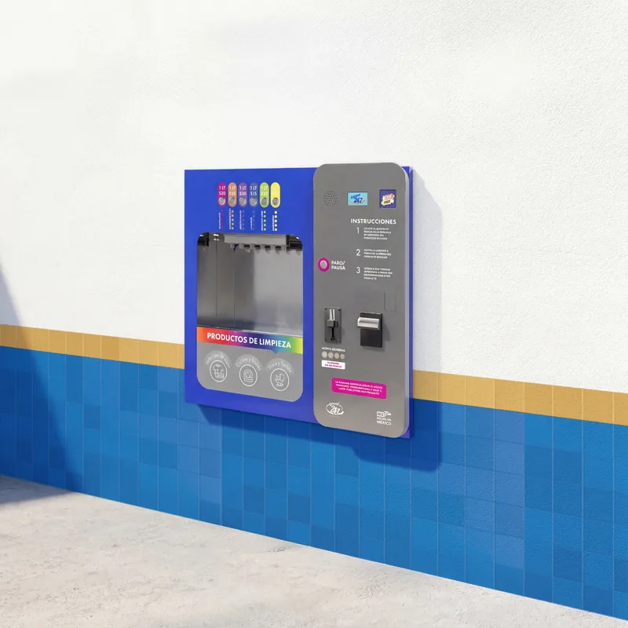

Franquicia Dúo
Agua purificada + hieloKiosko dúo con sistema de purificación de agua y ventana automatizada de hielo y agua empotrable en muro.
- Venta automatizada 24/7
- Productos de primera necesidad
- Operación sin personal
 Dúo
Dúo


Nuestras franquicias combinan profesionalismo, credibilidad y cercanía al consumidor
con tecnología innovadora para brindar productos con calidad inigualable.
Kiosko dúo con sistema de purificación de agua y ventana automatizada de hielo y agua empotrable en muro.
DúoSuma a tu kiosko dúo una ventana automatizada de productos de limpieza a granel.

Dúo + LimpiezaComplementa el kiosko dúo con un equipo automatizado de venta de croquetas a granel con hasta seis productos.
 Dúo + Croquetas
Dúo + CroquetasAgua, hielo, productos de limpieza y alimento para mascotas en un solo punto de venta automatizado.
 Dúo + Croquetas + Limpieza
Dúo + Croquetas + LimpiezaEste documento, sus contenidos, archivos adjuntos y referencias a otros archivos o direcciones electrónicas son de carácter informativo.
No representan ni deben entenderse de ninguna manera como una oferta comercial ni promesa de ningún tipo sobre el otorgamiento de una franquicia del A GRANEL 24-7 ni respecto de la marca registrada A granel 24-7®.
La información contenida en los mismos, es solamente una referencia y los datos numéricos representan ejemplos y supuestos del comportamiento de un negocio bajo condiciones normales de operación y en su etapa de madurez, no representan promesas sobre el nivel de ventas ni promesas sobre resultados actuales o futuros.
Los montos de la inversión en infraestructura se calcularon tomando en cuenta el proyecto arquitectónico modelo para una unidad estándar, y podrá variar una vez determinado el proyecto definitivo a desarrollar de acuerdo al sitio propuesto y las condiciones del mismo.

1. Completa el formulario que encuentras en esta página para recibir la presolicitud; una vez completada, deberá ser enviada a franquicias@agranel24-7.com.
2. Posteriormente te enviaremos un cuestionario, el cual nos permite hacer la primera evaluación de los candidatos a la franquicia A GRANEL 24-7.
3. Después de revisar la información te contactaremos vía telefónica o por e-mail para informarte el resultado.
4. Una vez que tu solicitud fue aprobada, se programará una entrevista para reunir documentación, aclarar dudas y definir tiempos de arranque.
El franquiciatario es la persona que adquiere los derechos para explotar la marca de A GRANEL 24-7.
Escríbenos y un asesor de franquicias resolverá esta duda de acuerdo con el modelo que te interese.
Escríbenos y un asesor de franquicias resolverá esta duda de acuerdo con el modelo que te interese.
Escríbenos y un asesor de franquicias resolverá esta duda de acuerdo con el modelo que te interese.
Escríbenos y un asesor de franquicias resolverá esta duda de acuerdo con el modelo que te interese.
Escríbenos y un asesor de franquicias resolverá esta duda de acuerdo con el modelo que te interese.